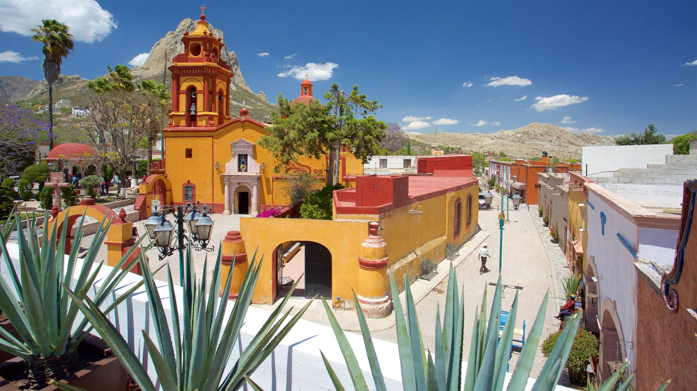
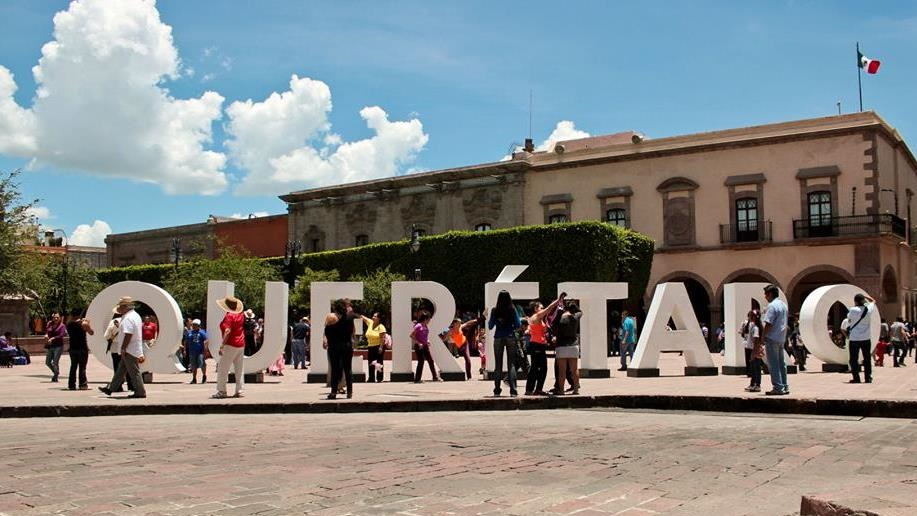

Municipios de Queŕetaro
La historia de Querétaro comienza en la época prehispánica como zona de frontera y centro ceremonial, habitada por otomíes y chichimecas, hasta que los españoles la fundaron oficialmente en 1531 con la ayuda del líder purépecha Fernando de Tapia. Durante la Colonia, la región se desarrolló gracias a sus recursos naturales y ubicación estratégica, volviéndose un centro importante de la Nueva España con construcciones emblemáticas como el acueducto. En el siglo XIX, Querétaro fue sede de eventos cruciales para la independencia y la historia nacional, albergando la conspiración que inició la lucha en 1810 y sirviendo como capital temporal del país en momentos de crisis.
En cuanto a su papel en la historia de México, Querétaro jugó un rol fundamental en múltiples ocasiones. Fue escenario de la conspiración de 1810, que liderada por Ignacio Allende y Josefa Ortiz de Domínguez, desencadenó la Guerra de Independencia. En el siglo XIX, fue capital de la República Mexicana y el lugar donde se ratificó el Tratado de Guadalupe Hidalgo, que puso fin a la guerra con Estados Unidos. Posteriormente, en 1867, la ciudad fue testigo del fusilamiento del emperador Maximiliano de Habsburgo en el Cerro de las Campanas, marcando el fin del Segundo Imperio Mexicano. Finalmente, en 1917, Venustiano Carranza convocó al Congreso Constituyente en Querétaro, donde se promulgó la Constitución Política de los Estados Unidos Mexicanos que rige al país hasta hoy.
| Municipio | Descripción |
|---|---|
| Amealco de Bonfil | Conocido por su población otomí y la artesanía textil tradicional; rodeado de paisajes serranos. |
| Arroyo Seco | Pueblo con encanto serrano y numerosas opciones de ecoturismo en la Sierra Gorda. |
| Cadereyta de Montes | Zona semidesértica famosa por formaciones rocosas y su biodiversidad característica. |
| Colón | Municipio con fuerte tradición agrícola y creciente actividad industrial y comercial. |
| Corregidora | Área conurbada a la capital, de rápido crecimiento urbano y desarrollo industrial. |
| Ezequiel Montes | Conocido por sus viñedos y cercanía a atractivos turísticos como el Peñón de Bernal. |
| El Marqués | Alberga parques industriales y zonas residenciales en expansión, cercano al aeropuerto. |
| Huimilpan | Predomina la actividad agrícola y existen comunidades con fuerte presencia otomí. |
| Jalpan de Serra | Pueblo Mágico en la Sierra Gorda, famoso por la Misión de Jalpan y el turismo ecológico. |
| Landa de Matamoros | Municipio serrano con ríos, cascadas y misiones históricas que atraen al turismo rural. |
| Pedro Escobedo | Zona en desarrollo industrial y residencial con creciente inversión y conectividad. |
| Peñamiller | Región montañosa con paisajes rocosos ideal para el senderismo y el turismo de aventura. |
| Pinal de Amoles | Municipio montañoso con bosques y rutas escénicas en la Sierra Gorda. |
| Querétaro (Santiago de Querétaro) | Capital del estado, con un centro histórico colonial y rico patrimonio cultural y económico. |
| San Joaquín | Punto de acceso a la Sierra Gorda, con áreas naturales y comunidades rurales. |
| San Juan del Río | Importante centro industrial y logístico con tradición comercial e histórico crecimiento poblacional. |
| Tequisquiapan | Pueblo Mágico famoso por su ruta del vino, quesos artesanales y turismo de fin de semana. |
| Tolimán | Conocido por sus viñedos, clima templado y atractivos naturales en los valles queretanos. |
Encuesta rápida
¿Cuál municipio te gusta?
Landa de Matamoros
- Festividades religiosas en honor a los santos patronos locales
- Preparación de platillos tradicionales serranos como el zacahuil y las acamayas
- Peregrinaciones a las misiones franciscanas históricas
- Elaboración de artesanías típicas de la Sierra Gorda
- Tradiciones agrícolas como la bendición de semillas y cosechas
- Danzas tradicionales como la de Concheros y huapangos serranos
- Técnicas ancestrales de aprovechamiento de recursos naturales
- Celebración del Día de Muertos con altares y ofrendas tradicionales
- Ceremonias comunitarias para solicitar lluvias y buenas cosechas
- Elaboración de medicina tradicional con plantas locales
 
Elementos de formulario HTML
| Elemento | Función |
|---|---|
| input | Campo genérico para entrada de datos (texto, contraseña, correo, número, fecha, archivo, etc.). |
| label | Etiqueta asociada a un control de formulario; mejora accesibilidad y permite enfocar el control al hacer clic. |
| select | Desplegable que permite al usuario elegir una (o varias) opciones representadas por elementos option. |
| textarea | Área de texto multilínea para introducir textos largos o comentarios. |
| button | Botón clicable que puede enviar formularios, resetearlos o ejecutar acciones con scripting. |
| fieldset | Grupo visual y semántico de controles relacionados dentro de un formulario; puede contener una legend. |
| legend | Título para un fieldset, describe el grupo de controles que contiene. |
| datalist | Lista de sugerencias predefinidas que pueden aparecer para un input asociado, ayudando la autocompletación. |
| output | Elemento que muestra el resultado de un cálculo o la salida de un formulario (ideal para mostrar datos dinámicos). |
| option | Opción individual dentro de un select o datalist; representa una elección posible para el usuario. |
| optgroup | Agrupa varias option dentro de un select para organizar opciones relacionadas bajo una etiqueta común. |